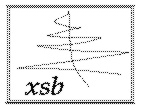

Flora-2 (now ErgoAI) is an advanced object-oriented knowledge representation and reasoning system. It is a dialect of F-logic with numerous extensions, including meta-programming in the style of HiLog, logical updates in the style of Transaction Logic, and defeasible reasoning. Applications include intelligent agents, Semantic Web, knowledge-based networking, ontology management, integration of information, security policy analysis, and more.
Flora-2 comes with comprehensive manuals and tutorials, which provide an overview of the theoretical foundations as well as the system. The tutorials include many examples and exercises.
All matters concerning Flora-2 and related systems are discussed in this forum.
April 28, 2023: Flora-2 and ErgoAI have united! Coherent Knowledge has released ErgoAI under the open-source Apache 2.0 license and moved the development to Github. As a result, further development of Flora-2 will stop and the users are invited to switch to the ErgoAI platform. The new platform is backward compatible with the old unless one relies on low-level undocumented features or the file structure of the Flora-2 source code.
December 31, 2020: Release Candidate 1 of Flora-2, version 2.1-RC1, has finally arrived. This release fixes many bugs and also adds several new features. See the release notes. If you like Flora-2, please write us a review at the Flora-2 Sourceforge Portal. Also, share your projects and experience at the ErgoAI, Flora-2, and XSB forum.
December 31, 2020: Release Candidate 1 of ErgoAI 2.1-RC1 has been spotted in the wild: free 3-months trial. Perhaps the most important new feature is an interface to MiniZinc, a powerful constraint solving and optimization framework, but not only that. A great number of bugs has also been fixed. Release notes are here. Coherent Knowledge would love to hear about your experience and projects involving ErgoAI or Flora-2 via the ErgoAI, Flora-2, and XSB forum.
November 21, 2018: An article on Flora-2 in Acupuncture.
November 12, 2018: A new forum for discussions concerning Flora-2, ErgoAI, and XSB has been created. Please subscribe and use it instead of the flora-users mailing list. Also, another article on Flora-2.
October 29, 2018: Flora-2 was featured in this recent article and in this one on Flora-2 in Homeopathy.
October 17, 2018: Flora-2/Ergo Lite 2.0 has arrived! This release improves stability and also adds new features thanks to the continuing support from Coherent Knowledge and SRI International. See release notes for the details of the changes. This is simultaneous with the release of ErgoAI 2.0 (formerly Ergo Suite), which adds a Python interface and much more. Coherent continues to offer a free 90 day trial of ErgoAI as well as a free academic license program for qualifying members of academic institutions, upon application.
May 18, 2018: Ergo was featured in a TED talk on rules and law!
March 1, 2018: Coherent Knowledge is happy to announce the release of Ergo Suite version 1.3 (Zeno). Please see the release notes for the details.
September 8, 2017: A new maintenance release: Flora-2/Ergo Lite 1.2.1 is here. This release fixes a number of bugs and also packs a few new things thanks to the continuing support from Coherent Knowledge and SRI International. See release notes for the details of the changes. On the Ergo front, expect a final release of version 1.2 soon (with additional data connectors, explanation API, ErgoText, and more). Coherent continues to offer a free 90 day trial license of Ergo Suite as well as a free academic license program for qualifying members of academic institutions, upon application.
June 14, 2017: Coherent Knowledge has released two tutorials on Ergo, which should be very useful also to Flora-2 users, especially at the beginner level. The Ergo Suite tutorial is a gentle introduction to mostly basic, but also some more advanced, features of Ergo. Much of this material is applicable to Flora-2. The tutorial Capturing Real World Knowledge in Ergo explains the process of development of a knowledge base for a real world domain (the laws from California Driver's Handbook). It also uses only the basic features, and almost all of it applies to Flora-2.
March 28, 2017:
Finally, a new release of Flora-2/Ergo Lite: 1.2
(Monstera deliciosa)!
A large number of bugs were fixed in this release
and quite a few enhancements added -- many due to the support
from Coherent Knowledge and
SRI International.
See
release notes for the
details of the changes.
On the Ergo front, its 1.2 release is also imminent, but meanwhile
a free 90 day trial version
of Ergo Suite 1.2 (Solon)
beta is available.
August 9, 2015: Flora-2 now has a commercial cousin, Ergo Suite from Coherent Knowledge Systems. Compared to Flora-2, Ergo Suite provides more expressiveness, enhanced connectivity, better performance, and enterprise features. See Ergo Suite vs. Flora-2 for more details. This announcement celebrates the release of Flora-2 v.1.1 (Loquat). See release notes for the information on the changes in Loquat. Needless to say, Ergo Lite remains free as in "freedom" and no functionality has been taken away. Although Ergo Suite has much additional functionality, it is syntactically upward compatible with Ergo Lite: Flora-2's rules and queries work the same way when run under Ergo Suite. From now on, Flora-2 will be also officially known as "Ergo Lite" to emphasize both that Flora-2 includes only a subset of Ergo Suite's functionality and also the fact that Flora-2's development is led by the same people that developed Ergo Suite. Coherent Knowledge, ever since its founding, supports the Flora-2 effort and contributes greatly to its ongoing maintenance.
July 1, 2014: The 1.0 release, at last(!), a Cherimoya delicacy: Version 1.0 (Cherimoya). Several new features and stability improvements, but the most visible change is the cleanup of the syntax. Details in the release notes.
December 15, 2013: Just in time for the New Year: Version 0.99.5 (Olive Tree). Many exciting enhancements. Details in the release notes.
May 13, 2013: After more than 5 years of development under the sponsorship of Vulcan Inc., Flora-2 Version 0.99 (Water Lily) has been released! This release includes many enhancements and extensions, including defeasible rules, user-defined functions, delay quantifiers, rule Ids, and more. Details are in the release notes. The license has also changed from LGPL 2.0 to Apache 2.0.
|
Powered by
 |